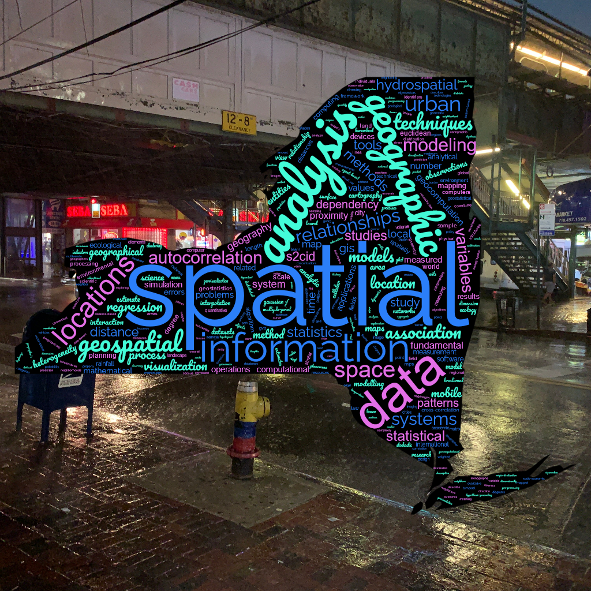
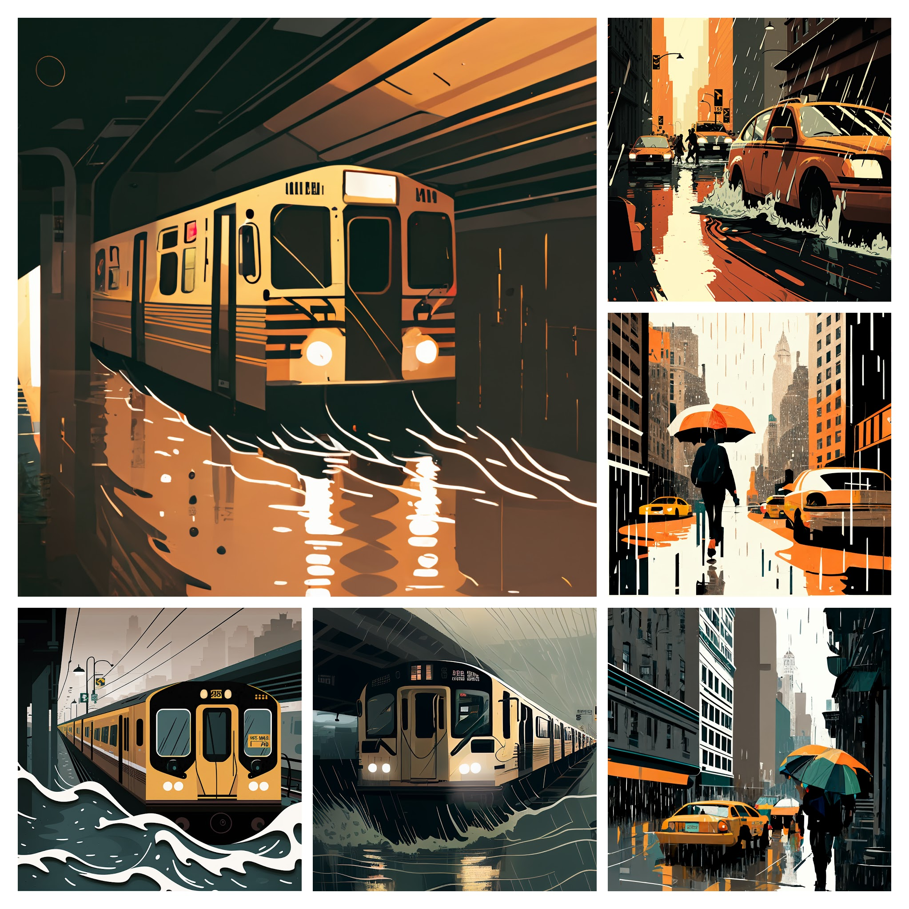

NYC Open Data Week 2023 📊
Contents
NYC Open Data Week 2023 📊#


When 🗓#
Saturday, March 18, 2023
Description 🌦#
What secrets can we learn about NYC from 311 Street Flooding Complaints❓
Have you ever considered examining the relationship of NYC 311 Street Complaints dataset to other geospatial datasets❓
In this talk, we attempt to answer three questions:
How can we measure inequality in street flooding complaints?
Is there a relationship between street flooding complaints and property values?
How does street flooding complaints compare to actual modeled flooding data?
Inspiration!
This project stems from a prior NYC Open Data 2021 talk: Analyzing NYC’s 311 Street Flooding Complaints from 2010 to 2020, given by Mark Bauer. This talk is an attempt to address some of the questions that were asked during the Q&A session.
Who should attend? 👩🏽💻#
Anyone with beginner-level proficiency is welcome! It is helpful, but not required to have some background knowledge in:
✔ Basics of Python or other programming languages (R, SQL, etc.)
✔ Implementing Data Analysis techniques
✔ Working with Jupyter Notebooks
✔ Interest in NYC 311 Open Data or Street Flooding datasets
Speakers | Say Hello 👋#
A group of civic minded data enthusiasts, who enjoy solving City related data problems together.
Presenter |
GitHub |
||
|---|---|---|---|
Ho Hsieh |
|||
Nathan Williamson |
|||
Mark Bauer |
|||
Chidi Ezeolu |


Agenda 📄#
Who we are
Website and GitHub Repo
Brief Overview of Data Science Lifecyle
Why Beyond EDA?
Method 1
Method 2
Method 3
References & Resources
Q & A
Visualizations#

[Ezeolu, 2023, user Skysmith et al., 2005]
